Project Overview
The product: A fast food app is a mobile application designed to facilitate the ordering and delivery of fast food from various restaurants.
Project Duration: [14th February-25th May]
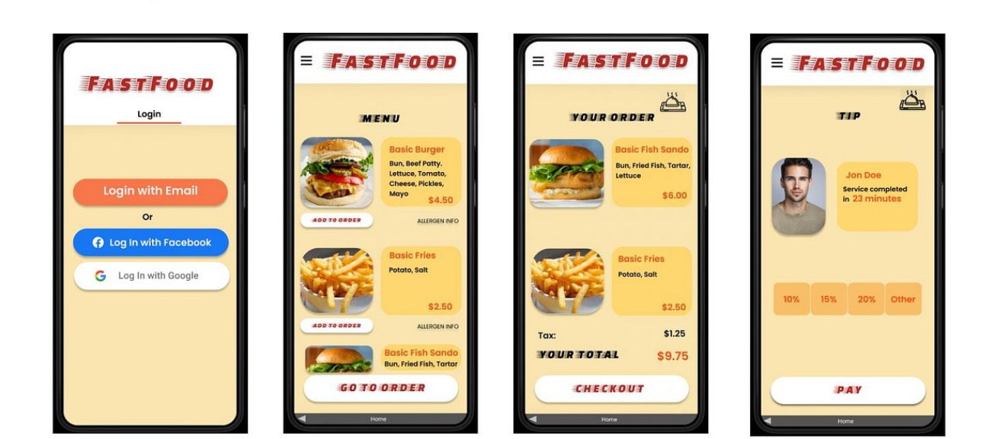
The Problem
Busy workers lack the time to prepare a homemade meal.
The Goal
Design an app for FastFood that allows users to easily order their favourite fast-food at a location near their workplace and get it delivered to them real quick.
My Role
As a Product Manager for the fast food app, I led the project from concept to launch, ensuring that we delivered a seamless and user-friendly experience for our customers.
Responsibilities
- User Experience Design: Collaborated with the UX/UI design team to create intuitive and attractive interfaces. Ensured that the app's design was user-centric and accessible.
- Customer Support: Set up customer support processes and tools to handle user inquiries and issues efficiently. Analyzed customer feedback to continuously improve the app.
- Feature Development: Defined and prioritized app features based on customer feedback and business goals
User Research
I conducted interviews and created empathy maps to understand the users I am designing for and
their needs. A primary user group identified through research was adults with flexible
job hours and who needed to have consistency when it came to meal choice.
The user group confirmed initial assumptions about FastFood customers, but research aslo
revealed that convenience, payment choices, and allergen info were important to make the
order process on the app a more seamless experience. The fact that FastFood is a nationwide franchise,
customers who may need to have consistent food quality and meal choices at any time of the day
delivered to their jobsite is extremely possible.
Personas
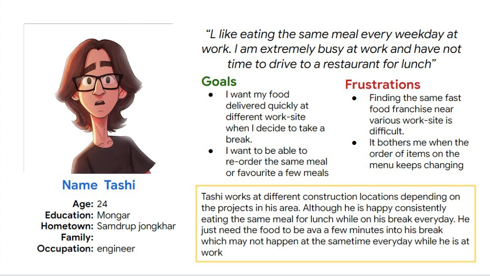
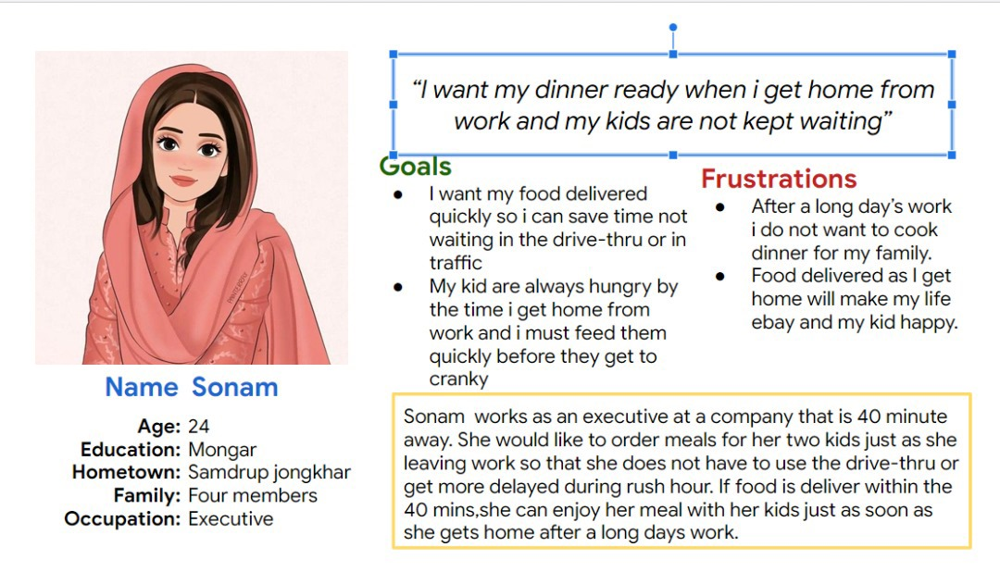
Sitemap
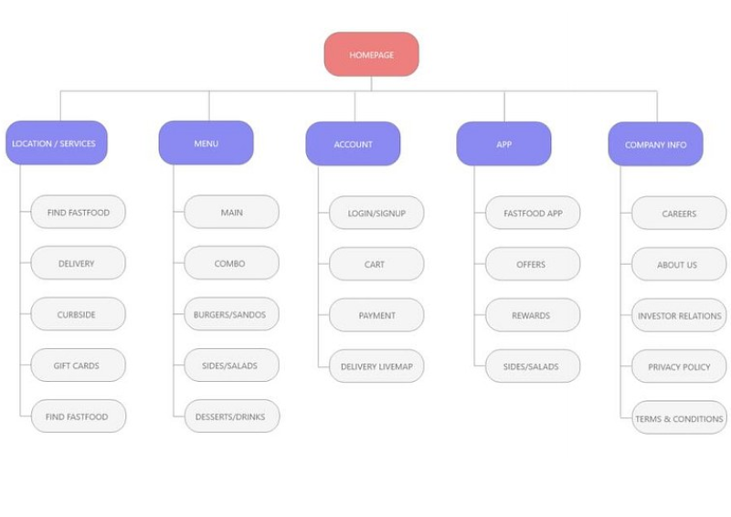
Paper Wireframes
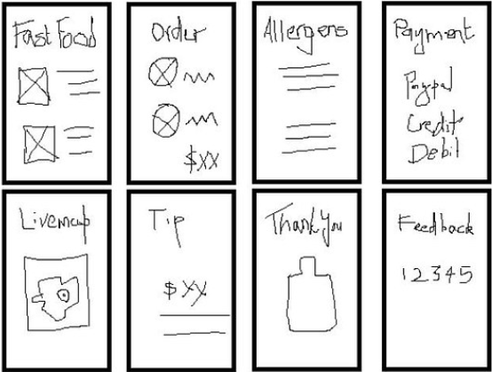
Digital Wireframes
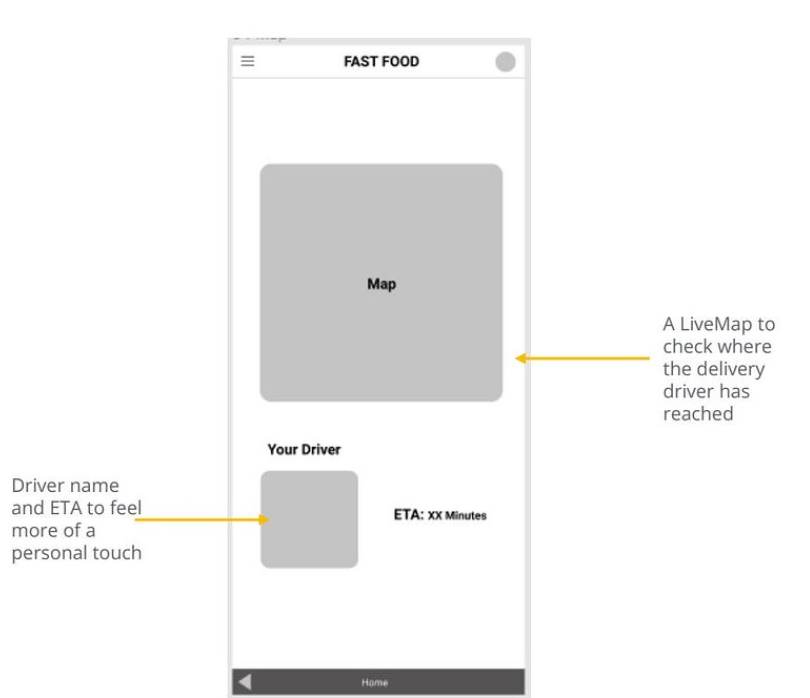
Low-Fidelity Wireframes
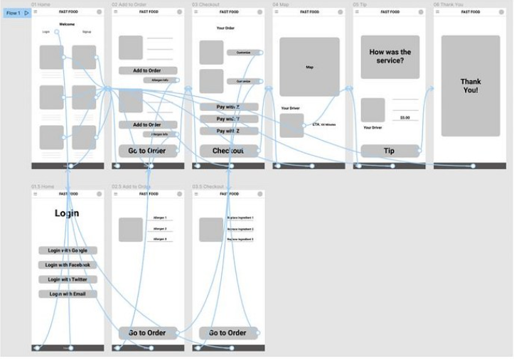
Usability Study
I conducted two rounds of usability studies. Finding from the first study helped guide the designs for wireframes to mockups.
The second study used a high-fidelity prototype and revealed what aspects of the mockups needed refining.
Finding 1
- Users want to reorder favourite meals using accounts
- Users want to see their delivery ETA and driver details
- Users want to be able to tip their delivery driver
Finding 2
- Users need to view allergen info
- Users want mutiple payment types
Mockups
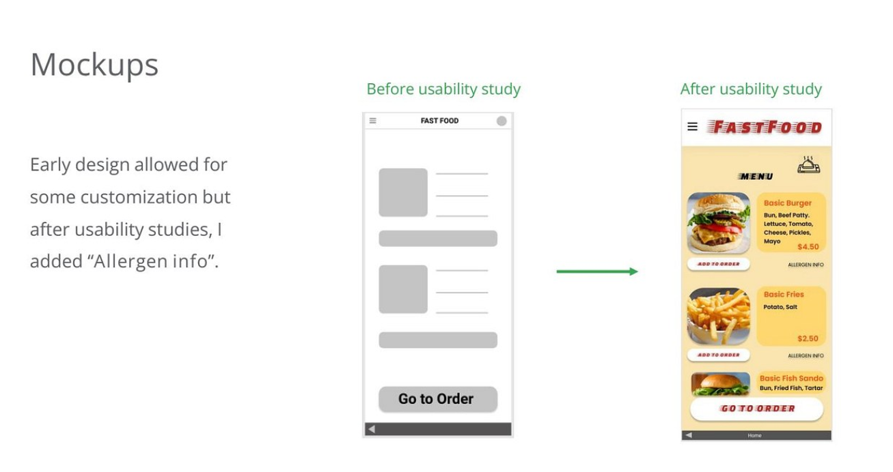
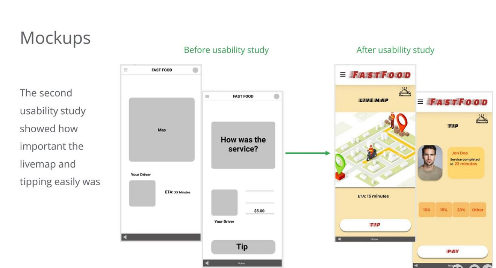
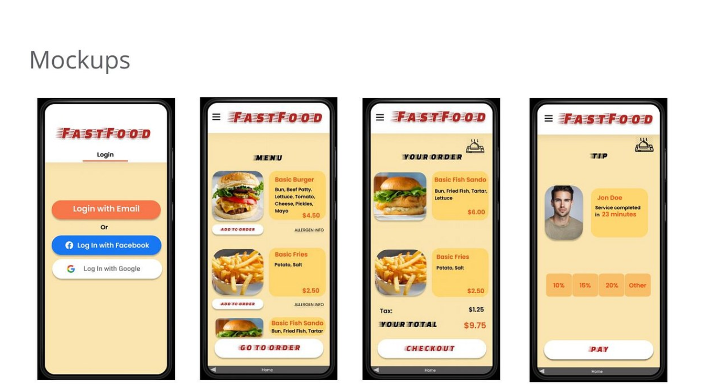
High-Fidelity Prototype
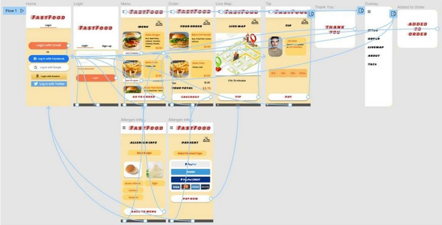
Accessibility
- Provided access to users who are vision impaired to call in for the order
- Used icons to make navigation easier
- Used detailed imagery for meals and the allergen info to help all users better understand the design
Takeaways
- Impact: The app makes users feel like FastFood really thinks about how to meet their customers nedds
- What I learned: While designing the FastFood app, I learned that the first ideas for the
app are only a starting point and usability studies lead to great onfluences each iteration of the app's designs
Next Steps
- Conduct another round of usability studies to validate whether pain points that users experienced have been effectively addressed
- Conduct more user research to determine any new areas of need
- Deliver the design to engineers to start in creating the back-end for the app